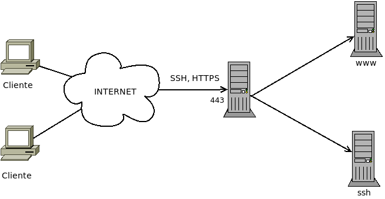
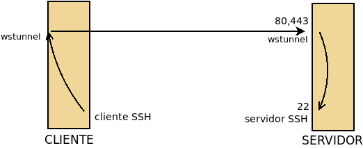
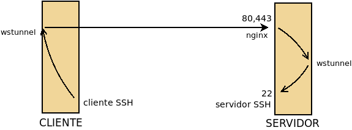

7.5.2.3.1. Multiplexores¶
Un multiplexor es un proxy capaz de recibir tráfico de distinta naturaleza y dirigirlo cada cual a su servicio correspondiente:
Su función es la de permitir que un mismo puerto pueda ser compartido por varios servicios distintos, comúnmente en previsión de que los clientes se encuentren en redes que, mediante el uso de una herramienta DPI, les restrinjan el acceso a determinados puertos. Lo habitual es que el multiplexor se coloque en el puerto 443, ya que es el puerto para HTTPs y el tráfico web seguro suele permitirse en todas las redes.
En el esquema se han representado los servidores finales cada uno en su máquina y, a su vez, en distinta máquina de la que corre el multiplexor, pero es posible también que multiplexor y servicios finales corran todos en el mismo equipo.
Nos detendremos en analizar cinco estrategias de multiplexación:
sslh, que permite multiplexar tráfico SSH, SSL y OpenVPN entre otros.
wstunnel, que nos permite canalizar cualesquiera aplicaciones a través de Websockets, lo cual es, por tanto, una manera de conseguir multiplexación.
haproxy, que entre otras cosas, es capaz de multiplexar al menos SSH, SSL y OpenVPN.
nginx, que es capaz de distinguir entre tráfico SSL y tráfico no SSL y, por tanto, puede hacer una labor de multiplexación. Se trata en el epígrafe sobre nginx dedicado a la multiplexación.
Multiplexión SSL que es una técnica que consiste en encapsular cualquier tráfico TCP con SSL y distinguir el tipo por el SNI. Trataremos su implementación con haproxy y al analizar la multiplexación con nginx.
7.5.2.3.1.1. SSLH¶
El servicio SSLH se limita a multiplexar distintos tipos de tráfico por lo que tiene una configuración muy sencilla. Para instalarlo:
# apt install sslh
y todo consiste en que sea él el que escuche en las interfaces físicas
por las que se puede recibir tráfico externo. Suponiendo que los servicios
finales se encuentren en la misma máquina la configuración se reduce a editar el
fichero /etc/default/sslh del siguiente modo:
RUN=yes # SSLH corre permanentemente, no a través de inetd.
DAEMON=/usr/sbin/sslh # Puede cambiarse por sslh-select
DAEMON_OPTS="--user sslh --listen 172.22.0.2:443 \
--ssh 127.0.0.1:22 --ssl 127.0.0.1:443 --openvpn 127.0.0.1:1194 \
--pidfile /var/run/sslh/sslh.pid"
suponiendo que se escucha la interfaz física tiene la IP 172.22.0.2 y que se desea multiplexar tráfico SSH, SSL y VPN. Las respectivos servicios deben estar escuchando, al menos, en esas interfaces por los puertos indicados. Una propuesta podría ser esta:
Servicio |
Interfaz |
Puerto |
|---|---|---|
SSH |
0.0.0.0 |
22/TCP |
OpenVPN[1] |
127.0.0.1 |
1194/TCP |
HTTPs |
127.0.0.1 |
443/TCP |
SSLH |
Todas excepto local |
443/TCP |
Si existen varias interfaces físicas entonces puede repetirse la opción --listen para incluirlas todas.
Nota
Existen dos versiones del programa: sslh-fork (o
sslh a secas) que utiliza un proceso para cada conexión y
sslh-select que usa un solo hilo para gestionar todas las
conexiones. El primero consume más recursos, pero está mejor testeado y un
error no afecta a todas las conexiones. A través de DAEMON puede
utilizarse uno y otro ejecutable.
7.5.2.3.1.2. haproxy¶
haproxy es, en realidad, un proxy bastante más completo de lo que expondremos aquí, por cuanto sólo expondremos como hacer que multiplexe tráficos de distinto tipo.
Desrrollaremos dos soluciones distintas:
Una en la que todos los protocolos (HTTP, SSH y VPN) van encapsulados con TLS y es el propio haproxy el que los desencapsula, los reconoce y los envía al servidor correspondiente.
Otra en que junto a tráfico TLS, se permite que SSH y VPN circulen sin encapsular, de manera que al llegar el tráfico a haproxy, este lo manda a sus respectivos servidores. Hasta aquí, haproxy se comporta exactamente igual que sslh. Sin embargo, el tráfico TLS no lo envía al servidor web, sino que lo desencapsula, como en el caso anterior, para comprobar si es HTTP, SSH y VPN y, reconocidos, se reenvían al servidor correspondiente.
En este segundo caso, la configuración permite enviar encapsulado o no el tráfico SSH y VPN según el grado de restricción de la red remota. Tenga en cuenta que encapsular este tráfico, que ya es tráfico seguro, sólo tiene por finalidad engañar a los proxies intermedios pero a costa de reducir el rendimiento de la conexión, ya que la capsula TLS supone procesamiento y metainformación extra.
Antes de entrar a configurar, es necesario instalar:
# apt install haproxy
y tener un certificado digital para el servicio, que puede ser autofirmado o acreditado por una autoridad certificadora (véase cómo obtener uno)[2].
Sea como sea, es preciso señalar que haproxy requiere que todas las claves públicas y la privada participantes en la autenticación estén reunidas en un mismo fichero.
En el caso de un certificado autofirmado, muy probablemente tendremos que hacer algo así:
# cat /etc/ssl/{private/ssl-cert-snakeoil.key,certs/ssl-cert-snakeoil.pem} > /etc/haproxy/keycert.pem
# chmod 600 /etc/haproxy/keycert.pem
y en el caso de haber usado letsencrypt, si no hemos creado un gancho de postinstalación como se sugirió en las explicaciones:
# cat /etc/letsencrypt/live/mi.servidor.org/{fullchain,privkey}.pem > /etc/haproxy/keycert.pem
# chmod 600 /etc/haproxy/keycert.pem
Creado el certificado adecuado, podemos hacer la configuración propiamente dicha, que es bastante más complicada y con muchísimas más variantes que la de sslh.
Primera variante
En ella, haproxy recibe tráfico cifrado con TLS, lo descifra y,
dependiendo de su naturaleza, lo envía al servidor adecuado. Bajo estos
presupuestos la configuración en /etc/haproxy/haproxy.cfg queda así:
global
# directivas que trae ya el fichero
tune.ssl.default-dh-param 2048
default
# directivas que trae ya el fichero
frontend ssl
bind *:443 ssl crt /etc/haproxy/keycert.pem
mode tcp
option tcplog
tcp-request inspect-delay 5s
tcp-request content accept if { req.ssl_hello_type 1 }
acl ssh_request payload(0,7) -m bin 5353482d322e30
use_backend http if HTTP
use_backend ssh if ssh_request
use_backend vpn if !{ req.ssl_hello_type 1 } !{ req.len 0 }
backend ssh
mode tcp
timeout server 2h
server ssh 127.0.0.1:22
backend vpn
mode tcp
timeout server 2h
server openvpn 127.0.0.1:1194
backend http
mode http
option forwardfor
http-request add-header X-Forwarded-Proto https
#reqadd X-Forwarded-Proto:\ https # Sintaxis anterior a haproxy 2.1
server nginx 127.0.0.1:80
Las claves de esta configuración son las siguientes:
Las cláusulas frontend definen las conexiones con el cliente y las cláusulas backend las conexiones con los servidores, de lo que se deduce que haproxy escucha en el puerto 443 de la interfaz real (se ha supuesto que su ip es 172.22.0.2); y conecta con tres servidores: uno SSH, uno VPN y un web, todos en la propia máquina.
Es justamente ahí donde se cifra a la salida y se descifra a la entrada por lo que se añade el parámetro
ssly se indica cuál el certificado[3].Como consecuencia de que se descifra, es posible analizar el contenido y distinguir entre los tres tráficos[4].
La conexión con el servidor se hace en modo HTTP al puerto 80[5]. Esto nos permite añadir los campos
X-Forwarder-Forpara indicar la IP del cliente original y la cabeceraX-Forwarder-Protopara avisar de que el protocolo que usó el cliente fue HTTPs y no HTTP que es el que ve el servidor. Si se tiene convenientemente configurado el servidor web, las aplicaciones web podrán saber quién se conecta y cómo.
Nota
haproxy. en este caso, no actúa como proxy transparente, por lo que todos los servidores finales entenderán que reciben las peticiones de la propia máquina. Si el origen de las peticiones para VPN y SSH nos fuera fundamental (en el servicio web se han resuelto vía cabeceras HTTP), podemos ponerlo a funcionar en modo transparente.
Nota
Si se dispone de varios certificados digitales, haproxy (a partir de su versión 1.6) permite declararlos todos en la misma instrucción:
bind *:443 ssl crt /etc/haproxy/keycert.pem crt /etc/haproxy/otro.pem
y él se encargará de determinar cuál es el apropiado utilizando la extensión SNI.
Segunda variante
No presupone que el tráfico al puerto 443 sea forzosamente SSL como la
anterior, sino que primero discrimina entre TLS, SSH o VPN. El tráfico
TLS lo desencapsula y vuelve a discriminarlo según sea la naturaleza del
tráfico tunelizado. Puede descargar el código de este enlace.
Nota
Por el modo en que se ha realizado esta configuración del servidor (y tambiém la anterior), éste no necesita conocer de antemano de qué naturaleza es el tráfico escondido dentro de TLS, ya que antes de discriminar tal tráfico desencapsula. Como encapsulado, el tráfico está cifrado y es imposible conocer cuál es (esta es, precisamente, la base de que podamos burlar cualquier proxy), el protocolo TLS habilita una manera de que en la propia envoltura se indique el nombre del servidor: la extensión SNI.
Una manera de distinguir el tipo de tráfico es hacer que el cliente incluya un SNI distinto para cada tipo de tráfico y reconocer éste leyendo el SNI:
frontend main
bind 172.22.0.2:443 # No descriframos en absoluto.
mode tcp
option tcplog
tcp-request inspect-delay 5s
tcp-request content accept if { req_ssl_hello_type 1 }
acl ssh_request req_ssl_sni -i ssh.mi.servidor.org
acl vpn_request req_ssl_sni -i vpn.mi.servidor.org
use_backend ssl-ssh if ssh_request
use_backend ssl-vpn if vpn_request
default_backend http
Ahora bien, el tráfico sigue cifrado con TLS lo cual puede no ser un problema para el servidor web[6], pero sí para los otros servidores. Eso obligaría a que el backend (ssl-ssh o ssl-vpn en el ejemplo) no entregue directamente el flujo, sino que cada uno de ellos lo envíe a un puerto local particular en que escucha también haproxy y que sea en este frontend donde haproxy aplique el certificado para descifrar.
7.5.2.3.1.3. wstunnel¶
wstunnel no es exactamente un multiplexador, sino un proxy que nos permite tunelizar a través de Websockets cualquier servicio (p.e. wireguard). Este programa actuará tanto en la parte cliente como en la servidor, de manera que el cliente (pongamos que SSH) conecta con su parte servidor y esta parte servidor la que entrega el tráfico al servidor SSH.
En el gráfico situamos en la parte delantera del cliente y el servidor los servicios expuestos (porque escuchan en la interfaz física) y en la trasera los no expuestos (porque escuchan en la interfaz de loopback). Obsérvese que como el servidor SSH sigue expuesto, en las redes remotas en que no hay restricciones seguirá pudiéndose acceder a él directamente.
La aplicación nos permite multiplexar por dos razones:
Porque un misma parte servidor puede tunelizar tráfico de distinto tipo.
Porque al ser una tecnología web, podemos colocar a la escucha un un proxy web inverso y que éste tenga como uno de sus backends la parte servidor de wstunnel:

No existe paquete para Debian, pero podemos descargar el ejecutable de su
repositorio de Github. Su uso es bastante
sencillo. Debemos descargar en las dos máquinas el ejecutable y colocarlo en un
lugar adecuado (p.e. /usr/local/bin).
- Servidor
En la máquina servidor, que es lo que realmente nos interesa a efectos de este epígrafe, debe escuchar según nos interese. Por ejemplo, así:
# wstunnel -v --server ws://0.0.0.0
lo cual supone que la aplicación escuche sin cifrado en el puerto 80 (ws) de todas las interfaces los datos tunelizados. Podríamos modificar la escucha cambiando el protocolo por wss que cifrará y escuchará por el 443. Si nos interesara, podríamos alterar los puertos prefijados también (p.e. ws://0.0.0.0:8080). A qué aplicación se redirijan los datos dependerá de lo que se especifique en el cliente. La línea anterior supone exponer wstunnel (tal como representa la primera figura) y como no se ha establecido ninguna restricción sobre el destino del tráfico, esto podría propiciar que cualquier máquina utilizara ilegítimamente nuestro túnel. Así pues, cuando se expone el túnel lo más prudente es restringir el destino:
# wstunnel -v --server ws://0.0.0.0 -r 127.0.0.1:22
que sólo aceptará tráfico de clientes que indiquen que el tráfico debe mandarse al servicio SSH local a la parte servidor, o sea, a un servidor SSH que está conectado en la misma máquina.
Para resolver la situación en la que queremos compartir el puerto y exponemos el proxy (o sea, nginx) y no wstunnel basta con que hagamos que éste último escuche en algún puerto libre de una interfaz de loopback:
# wstunnel -v --server ws://127.0.0.1:8080
en que podemos hacer exactamente la misma puntualización a la restricción sobre el destino.
- Cliente
En la máquina cliente establecemos el otro extremo del túnel de este modo:
# wstunnel -v -L 12345:127.0.0.1:22 ws://203.0.113.1
donde hemos supuesto que la máquina servidor tiene la IP 203.0.113.1. En este extremo del túnel indicamos a wstunnel que el tráfico que escuche por el puerto 12345 de la interfaz de loopback debe ser dirigido en el servidor al puerto 22 de la interfaz de loopback (del servidor claro está). Esto supone que si queremos usar el túnel, el cliente SSH deberá conectar al puerto 12345 de lo. Ha de hacerse notar que el que no se cifra y conectamos al puerto 80, es coherente con el modo en que arrancamos wstunnel en el servidor.
Es importante señalar también que al no haber especificado en el cliente, el puerto 12345 en el cliente y el puerto 22 en el servidor son TCP. Sin embargo, wstunnel tiene capacidad para tunelizar protocolos UDP con tan solo indicarlo al arrancar el cliente (en el lado del servidor todo sigue igual):
# wstunnel -v --udp --udpTimeoutSec -1 -L 12345:127.0.0.1:1194 ws://203.0.113.1
En este caso el cliente escucha en el puerto 12345/UDP y en el servidor los datos acaban dirigidos al puerto 1194/UDP.
Por último, cuando en el servidor colocamos un proxy que recibe distinto tráfico y debe identificar cuál es el dirigido al websocket podremos usar un nombre específico de máquina:
# wstunnel -v -L 12345:127.0.0.1:22 ws://ssh.example.net
o incluso una ruta:
# wstunnel -v -L 12345:127.0.0.1:22 ws://www.example.net/ssh
- Ejemplo de uso
Para ilustrar el uso de wstunnel, podemos hacer lo siguiente en el servidor:
# wstunnel -v --server ws://0.0.0.0 -r 127.0.0.1:11111
y poner a escuchar el simple netcat:
# netcat -l -p 11111
En el cliente, establecemos el otro extremo del túnel así:
# wstunnel -v -L 22222:127.0.0.1:11111 ws://203.0.113.1
y utilizamos netcat para conversar con el del servidor:
# netcat localhost 22222
Nota
En este caso concreto en el cliente podemos simplificar ejecutando:
# wstunnel -v -L stdio:127.0.0.1:11111 ws://203.0.113.1
que hace que el wstunnel del cliente no converse con el puerto 22222, sino con la entrada y salida estándar, por lo que pondemos ahorranos la ejecución de netcat en el cliente.
- Servicio
Para la parte de servidor, es espcialmente aconsejable convertir wstunnel en un servicio de systemd creando el siguiente servicio en
/etc/systemd/system/wstunnel.service:[Service] EnvironmentFile=-/etc/default/wstunnel ExecStart=/usr/bin/wstunnel $OPTIONS Restart=always StandardOutput=syslog StandardError=syslog SyslogIdentifier=wstunnel User=nobody Group=nogroup [Install] WantedBy=multi-user.target
que requiere un fichero
/etc/default/wstunnelpara definir las opciones de arranque:#OPTIONS="--server ws://127.0.0.1:8080" OPTIONS="--server ws://0.0.0.0:8080"
Por último, habrá que habilitarlo para arranques futuros:
# systemctl daemon-reload # systemctl enable wstunnel # systemctl start wstunnel
Notas al pie